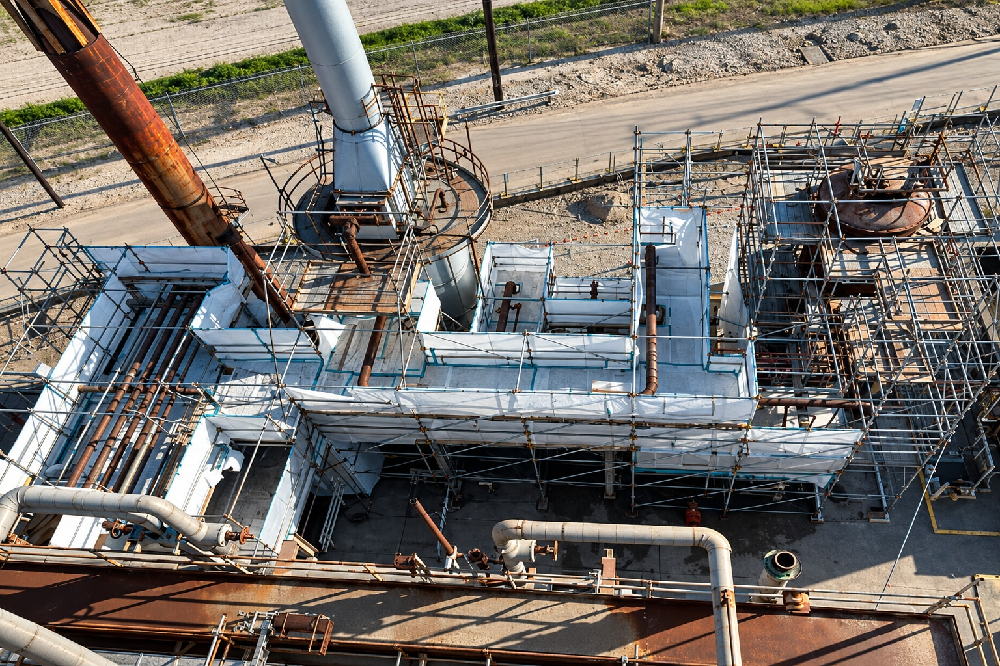

NorthStarWe Bring Answers.
NorthStarWe Bring Answers.Decommissioning
Service brief / 01
Service brief / 01
Decommissioning / Service brief
Plan the exit. Preserve the options.
A facility transition involves assets, materials, utilities and future use. NorthStar connects decommissioning, dismantlement and recovery into an accountable scope.

What leaves. What stays. What follows.
The right plan distinguishes equipment for recovery from materials for removal. It also defines utility interfaces, environmental work and the condition needed for the next phase.
DismantlementAsset recoverySpecialist coordination